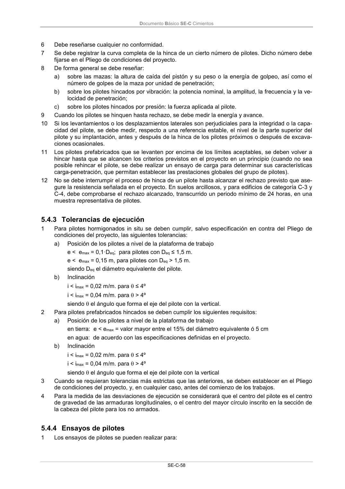

DB-SE-C Cimientos · edición 2019-12-20 · capa oficial
Documento DB-SE-C-oficial · SHA-256 del PDF a71133f4b0dca253e45ea3071c70f2a512354bcc5cd841bf89b1a502f567ac5e
Copia fiel del PDF fuente · Fuente oficial
Ficha de la disposición en la fuente oficial
Formatos: JSON del segmento · Markdown
5.4.4 Ensayos de pilotes 1 Los ensayos de pilotes se pueden realizar para: Documento Básico SE-C Cimientos SE-C-59 a) estimar los parámetros de cálculo; b) estimar la capacidad portante; c) probar las características resistente-deformacionales en el rango de las acciones especifica- das; d) comprobar el cumplimiento de las especificaciones; e) probar la integridad del pilote. 2 Los ensayos de pilotes pueden consistir en: a) ensayos de carga estática; b) ensayos de carga dinámica, o de alta deformación; c) ensayos de integridad; d) ensayos de control. 3 Los ensayos de carga estática podrán ser: a) por escalones de carga; b) a velocidad de penetración constante. 4 Los ensayos de integridad podrán ser: a) ensayos de eco o sónicos por reflexión y por impedancia, o de baja deformación; b) ensayos sónicos por transparencia, o cross-hole sónicos. 5 Los ensayos de control podrán ser: a) con perforación del hormigón para obtención de testigos; b) con inclinómetros para verificar la verticalidad del pilote. 6 Conviene que los ensayos de carga estática y dinámica no se efectúen hasta después de un tiempo suficiente, que tenga en cuenta los aumentos de resistencia del material del pilote, así como la evo- lución de la resistencia de los suelos debida a las presiones intersticiales. 7 Para edificios de categoría C-3 y C-4, en pilotes prefabricados, se considera necesaria la realiza- ción de pruebas dinámicas de hinca contrastadas con pruebas de carga. 6
